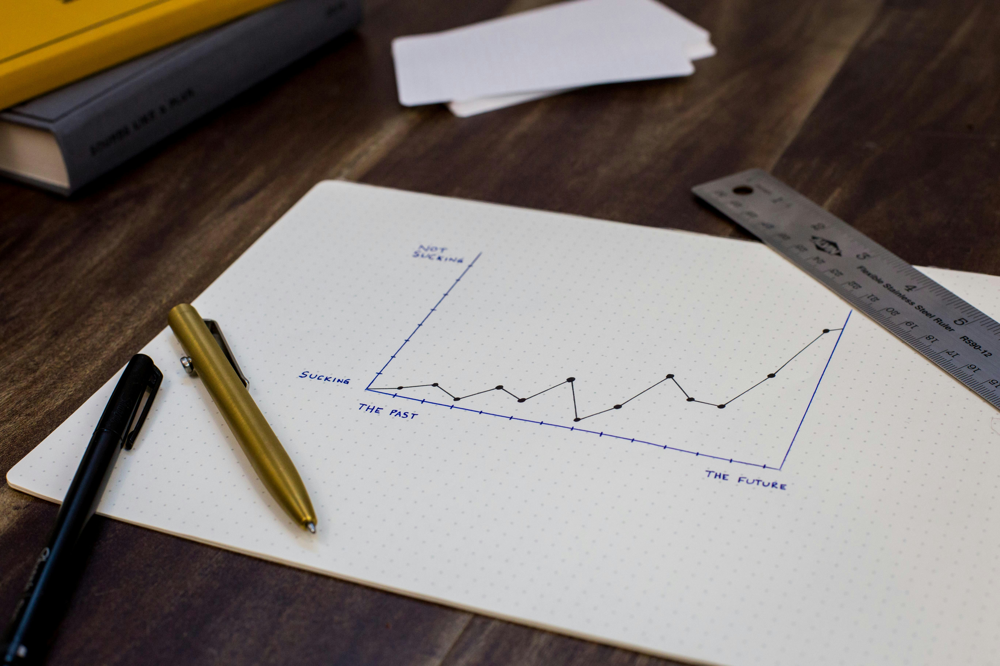

Our Mission for PillarNexus
Building a sustainable future through inclusive industries, cutting-edge innovations, and resilient infrastructure — aligned with Sustainable Development Goal 9.
Strengthening Small Industries Through Inclusive Finance
At PillarNexus, we envision a future where every small enterprise has access to financial tools that enable sustainable growth. In many developing regions, small-scale industries face immense challenges in securing credit or banking services.
We aim to bridge this gap by promoting financial literacy, advocating affordable credit systems, and encouraging accessible financial infrastructure. Inclusive finance not only unlocks economic potential but also strengthens communities through job creation and localized innovation.
Driving Progress Through Technological Innovation
Innovation plays a crucial role in building resilient economies. Small enterprises and startups often face limitations due to lack of access to emerging technologies.
PillarNexus supports digital transformation and knowledge sharing to empower these industries with modern tools. From AI and IoT to renewable technologies, our platform highlights innovation as the heartbeat of sustainable development.
Building Greener, Smarter Infrastructure
Sustainable infrastructure is essential for inclusive growth. As outlined in SDG Target 9.4, upgrading outdated systems with clean and efficient technologies is critical.
PillarNexus advocates for eco-conscious industrial upgrades, smarter urban development, and technology-driven connectivity to ensure no community is left behind.

Educating for Awareness and Impact
Real change begins with understanding. PillarNexus serves as an educational platform to spread awareness about SDG 9 and its importance.
Through blogs, videos, and outreach programs, we empower communities and young leaders to become champions of sustainability, innovation, and inclusive development.
Solutions and the Road Ahead
PillarNexus is a dynamic platform that evolves with global needs. Our mission is to remain a catalyst for change — offering real-world solutions and empowering people through innovation.
We believe in collaboration, sustainable growth, and inclusivity. Together, we can build a world where industries uplift lives, innovation solves real problems, and infrastructure connects everyone.